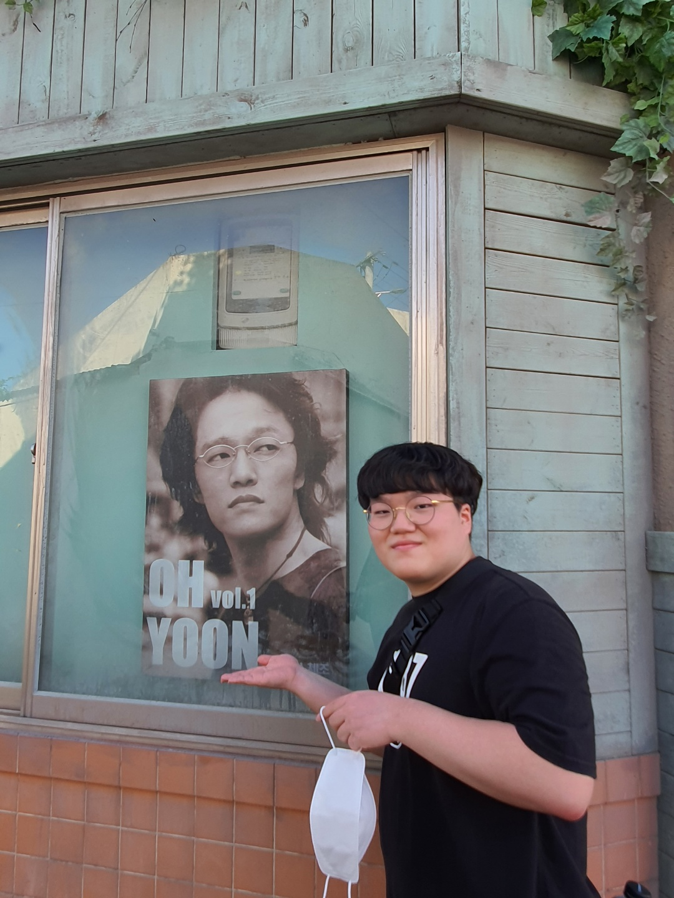

자기 소개 홈페이지
안녕하세요 저는 단국대학교에서 소프트웨어학과에 재학중인 32182661
오성훈이라고 합니다.
이 홈페이지는 오픈소스SW활용의 중간고사
대체 과제인 자기 소개 홈페이지입니다.
이 홈페이지는 자기 소개를 리스트로 표현하고 각각의 정보들을 추가해서
작성했습니다.
자기 소개 리스트

- 이름: 오성훈
- 생년월일: 1999년 11월 11일(한국 나이 24세, 만 22세)
- 고향: 대전광역시
- 가족 관계: 아빠, 엄마, (여)동생
- 성격: 내성적이고 화가 많은 편
- MBTI: ISFJ
- 내가 생각하는 나의 장점: 어떤 일을 해야 하면 최대한 노력해서 하는 편이다.
- 내가 생각하는 나의 단점: 쉽게 포기하는 편이다
- 취미:
- 영화, 드라마 보기
- 노래 듣기
- 스포츠 경기 보기
- 여행다니기
- 좋아하는 음식: 치킨